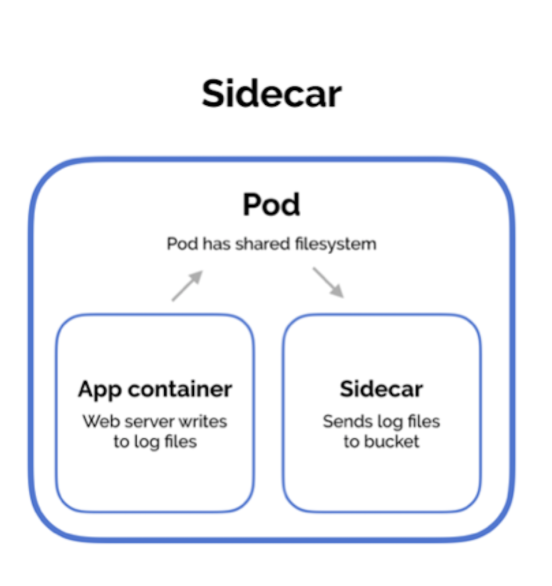
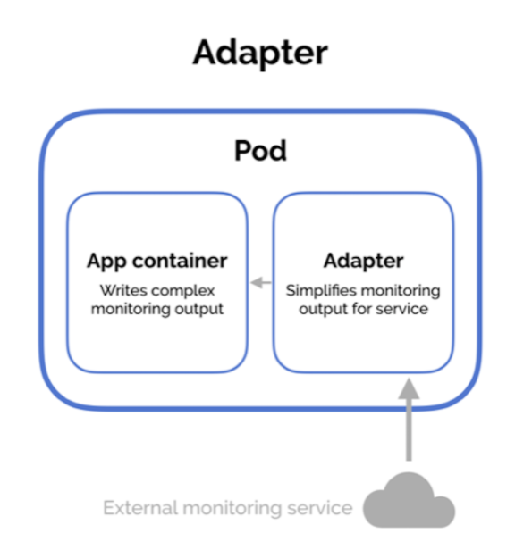
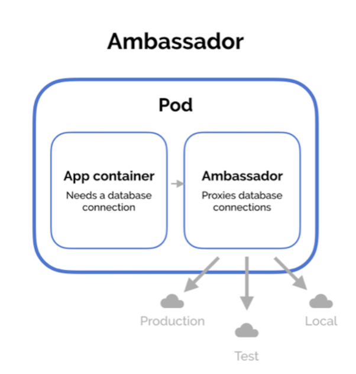

Multi-container Pods 是另外一個很常見的使用方式，有 4 種模式 Init Pattern 、Sidecar Pattern、Adapter Patter 、Ambassador Pattern。
為什麼會出現這種模式，主要的目的是要讓 container 的工作可以單純化，透過組合的方式來完成原本應該要做的事情
Init Pattern
-
在主要 Container 前執行的 Container
-
只會跑一次
-
init container 完成後才會執行主要的 container
-
基本寫法
1
2
3
4
5
6
7
8
9
10
11
12
13
14
15
16apiVersion: v1
kind: Pod
metadata:
name: ps-init
labels:
app: initializer
spec:
initContainers:
- name: init-ctr
image: busybox
command: ['sh', '-c', 'until nslookup pluralsight-ftw; do echo waiting for pluralsight-ftw service; sleep 1; done; echo Service found!']
containers:
- name: web-ctr
image: nigelpoulton/web-app:1.0
ports:
- containerPort: 8080initContainers區塊就是用來定義 init containers 的- 可以有多個 container
- 會依序執行
- 如果 init container 執行失敗，整個 Pod 會重新開始 (預設值)，可以被修改
- 應設定 resource requests & limits
Sidecar Pattern

-
與 main container 同時執行，平行運作
-
寫法就是在 containers 下有第二個 image 時，基本上就是 sidecar pattern
-
範例:
1
2
3
4
5
6
7
8
9
10
11
12
13
14
15
16
17
18
19
20
21
22apiVersion: v1
kind: Pod
metadata:
name: git-syncer
labels:
app: git-syncer
spec:
containers:
- image: nginx
name: web
volumeMounts:
- name: html
mountPath: /usr/share/nginx/
- image: k8s.gcr.io/git-sync:v3.1.5
name: init-sync-ctr
volumeMounts:
- name: html
mountPath: /tmp/git
...
volumes:
- name: html
emptyDir: {} -
常見用法: Logging
Adapter Pattern

-
範例
1
2
3
4
5
6
7
8
9
10
11
12
13
14
15apiVersion: v1
kind: Pod
metadata:
name: web
spec:
containers:
- name: web-ctr
image: nigelpoulton/nginxadapter:1.0
ports:
- containerPort: 80
- name: transformer
image: nginx/nginx-prometheus-exporter
args: ["-nginx.scrape-uri","http://localhost/nginx_status"]
ports:
- containerPort: 9113 -
使用另外一個 container 做輸出資料轉換
-
SRP
Ambassador Pattern

-
在 Pod 內的建立起的 proxy
-
Service 只對 Ambassador 做開放